M03(감리지침 2장)은 정보화 사업 수행과 감리의 근거가 되는 각종 고시·지침·가이드를 다룬다. 개별 지침의 목적·정의·핵심 수치(금액·비율·기간)·산출물·분류 체계가 반복 출제되며, 특히 "어느 지침에 어떤 조항(감리·하도급·표준화 등)이 있는가"를 교차로 묻는 문제가 많다.
💡 Tip · 학습 전략
지침들은 서로 조항을 공유·참조한다(예: 하도급 규정은 '구축·운영지침'과 '하도급 적정성 판단기준'에 나뉘어 존재). 각 지침의 대표 키워드와 고유 수치를 묶어 암기하고, 아래 각 토픽의 기출 오답 근거를 함께 익힌다.
2. 행정기관 및 공공기관 정보시스템 구축·운영지침
문제에서는 흔히 '정보시스템 구축·운영 지침'으로 줄여 부른다. 전자정부법 제45조제3항에 근거하며, 정보시스템 구축·운영의 기준·표준·절차와 상호운용성 기술평가를 규정한다.
소프트웨어 개발보안 ★
구분
내용
개발보안 원칙(제50조)
보안약점이 없도록 SW를 개발·변경. 감리대상이 아닌 사업도 개발보안 적용 가능
적용 범위
신규개발: 소스코드 전체 / 유지보수: 변경된 소스코드 전체 (상용 SW는 제외)
보안약점 진단(제53조)
감리 시 감리법인이 보안약점 제거 여부를 진단. "정보시스템 감리기준" 제10조 세부검사항목에 포함. 진단도구는 국정원장 인증 도구 사용
Q. 보안약점 없는 SW 개발 내용으로 적합하지 않은 것을 모두 고르면?
가. SW 유지보수 사업의 개발보안 범위는 반드시 소스코드 전체이어야 한다.
나. 감리법인이 진단할 경우 감리기준 세부검사항목에 보안약점 제거 여부를 포함한다.
다. 감리대상 사업이 아닌 경우 사업자로 하여금 진단·제거하게 할 수 없다.
정답 ③ (가, 다) — 가) 유지보수는 '변경된' 소스코드 전체(X), 다) 감리대상이 아니어도 개발보안 적용·진단 가능(X). 나는 옳음.
계약·인력·감리 관련 조항
조항
내용
장기계속계약(제36조의2)
수년 소요 유지보수는 국가/지방계약법에 따라 장기계속계약 체결 가능
인력관리(제42조)
사업대가를 기능점수(FP)로 산정한 경우 제안요청서에 투입인력 수·기간 방식 요구사항을 명시할 수 없음
감리(제13조)
영 제71조 감리대상 사업은 등록 감리법인이 감리 수행, "정보시스템 감리기준" 준수. (구축·운영 사업은 모두 감리 대상)
감리시행(제49조)
발주기관·사업자는 단계별 감리수행결과보고서에 따라 시정조치 수행
도입기준·예산·평가배점 ★★
구분
내용
HW/SW 도입(제6조)
클라우드컴퓨팅 활용 우선 검토, HW는 규모산정 지침 준용, SW는 GS인증·NEP·NET 제품 확인, 중소기업 제품 우선 구매
예산·대가산정(제9조)
SW는 'SW사업 대가산정 가이드' 적용. HW/SW 구입비 = ① 조달품목→조달단가 ② 비조달→최근 도입가/유사 실례가격 ③ 그 외→3개 이상 견적 최저가
평가배점(제18조)
기술능력평가 배점 90점 원칙. 단 ① HW 비중 50% 이상 ② 추정가격 1억 미만 개발사업 등은 80점 가능 (암기 "팔오")
하도급 대금(제19조)
직접인건비는 노임단가 100%, 제경비+기술료 합 = 직접인건비의 20% 이상
하도급 승인·관리(제38·40조)
승인여부 14일 이내 통지, 미이행 시 공정거래위원회에 조치 요청
💡 Tip · 함정 정리
HW 비중 50% 이상 사업은 기술능력평가 80점(90점 아님). 하도급 미이행은 공정거래위원회(안전행정부 장관 아님). 제경비+기술료는 직접인건비의 20%(원도급자 제경비·기술료 합의 20% 아님).
Q. '정보시스템 구축·운영 지침'의 사업관리 요건 설명 중 잘못된 것은?
NEP·NET 제품 도입 시 중소기업 제품을 우선 구매하도록 평가항목에 반영한다.
사전협의 대상은 사업계획 수립 후 지체없이 행정안전부 장관에게 요청한다.
추정가격 중 HW 비중이 50% 이상인 사업은 기술능력평가 배점을 90점으로 한다.
개발비를 기능점수로 산정한 경우 투입인력 수·기간 방식 요구사항을 명시할 수 없다.
정답 ③ — HW 비중 50% 이상 사업은 배점을 80점으로 할 수 있다.
3. 소프트웨어사업 하도급계약의 적정성 판단기준
SW산업진흥법 제20조의3 및 시행규칙 제8조에 따라 하도급계약의 적정성 판단 방법·항목·절차를 정한다.
용어
정의
도급 / 하도급
도급: SW사업 완성을 약정하고 대가 지급을 약정하는 계약 / 하도급: 도급받은 사업의 전부·일부를 제3자에 도급(재하도급 포함)
SW산업진흥법 제20조 등에 따라 국가기관 등의 SW사업 관리·감독 절차와 적정 사업기간 산정 기준을 규정한다.
구분
내용
사업규모 산정
'SW사업 대가산정 가이드' 준용
1인 생산성 산정
소프트웨어공학백서·연구문헌 기준 활용
규모별 생산성(예) ★
3,000 FP 이상 → 26 FP/MM 등 규모가 클수록 1인 생산성 지표 조정
💡 Tip
상세 요구사항은 기능/성능/인터페이스/데이터/시스템장비 구성 등으로 분류하며, 요구사항 유형 정의를 뒤바꾼 보기가 오답으로 출제된다.
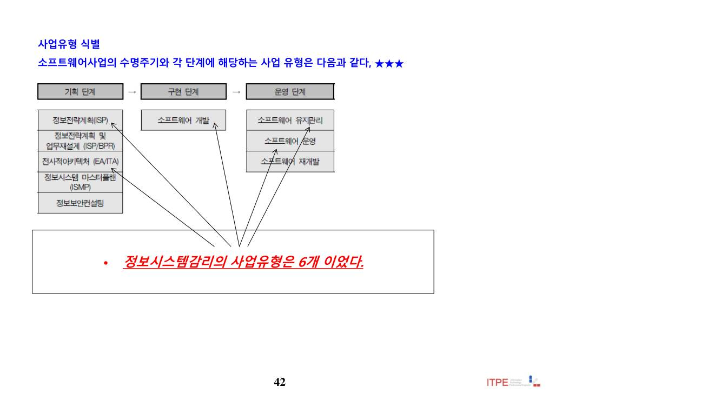
📄 원본 슬라이드 p.42 (추출 곤란 도표·ITO)
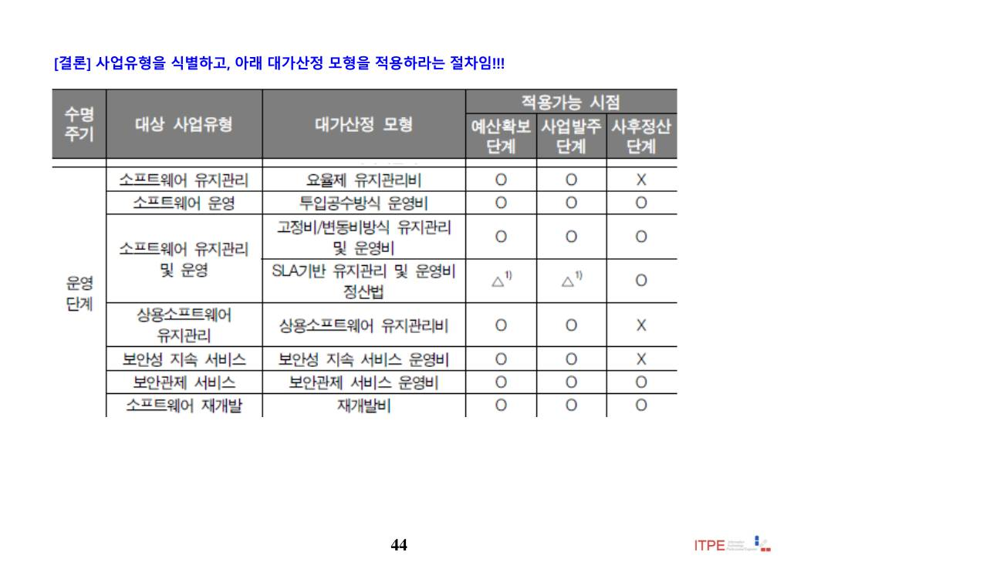
📄 원본 슬라이드 p.44 (추출 곤란 도표·ITO)
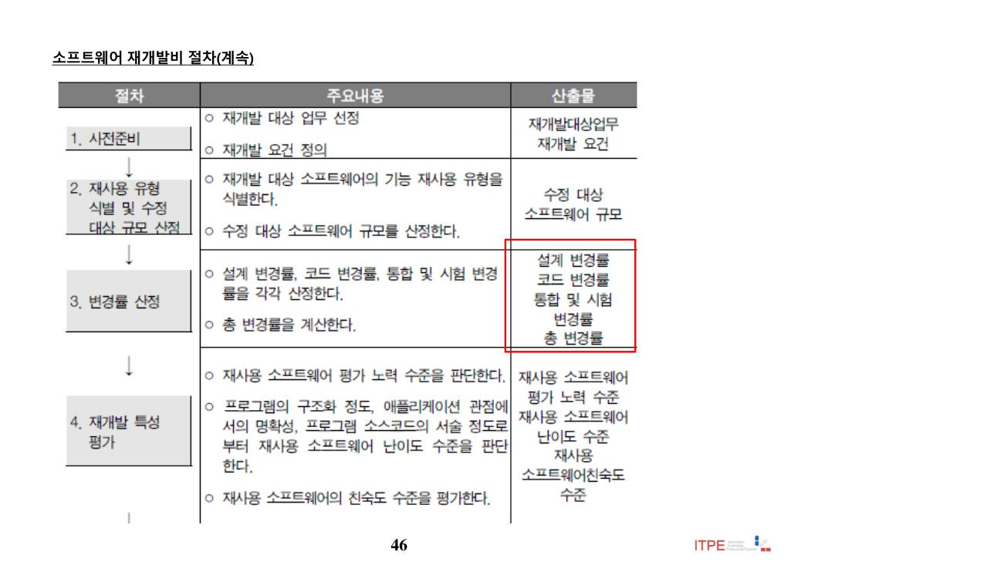
📄 원본 슬라이드 p.46 (추출 곤란 도표·ITO)
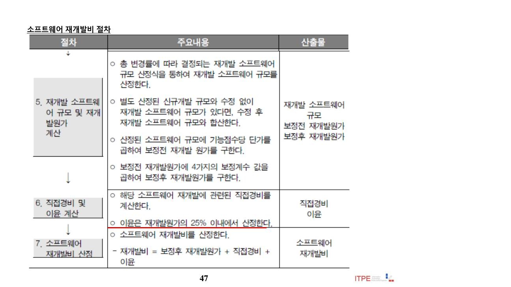
📄 원본 슬라이드 p.47 (추출 곤란 도표·ITO)
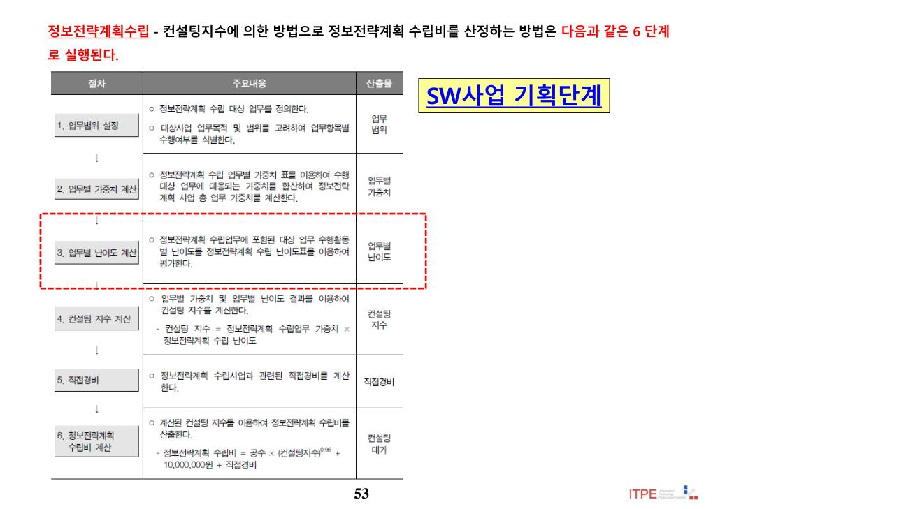
📄 원본 슬라이드 p.53 (추출 곤란 도표·ITO)
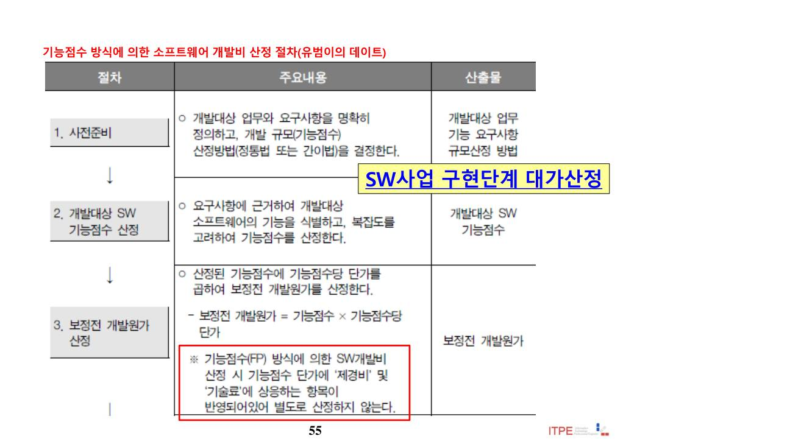
📄 원본 슬라이드 p.55 (추출 곤란 도표·ITO)
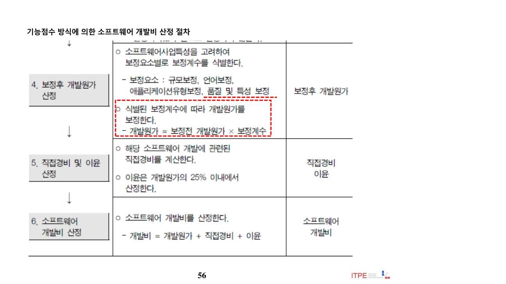
📄 원본 슬라이드 p.56 (추출 곤란 도표·ITO)
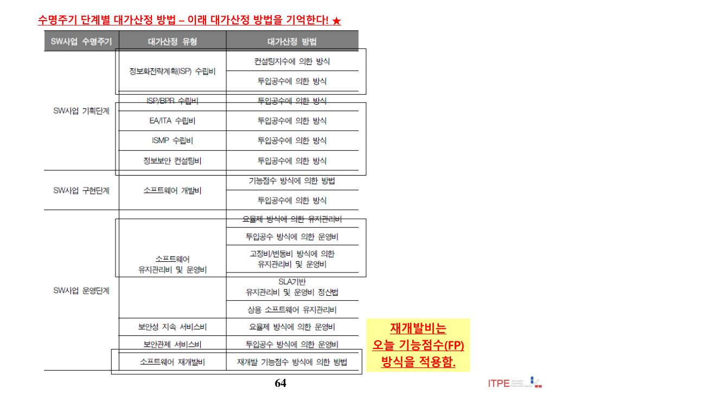
📄 원본 슬라이드 p.64 (추출 곤란 도표·ITO)
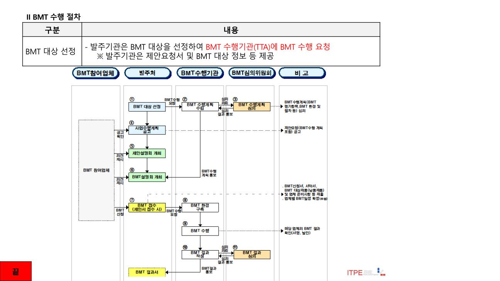
📄 원본 슬라이드 p.74 (추출 곤란 도표·ITO)
7. 제안요청서 요구사항 작성 가이드
객관적 요구사항과 개발 기준을 RFP(제안요청서)에 명확히 제시하여 시스템 가시성을 확보하고 개발 요구사항의 기준선으로 활용한다.
요구사항 구성요소(유형) ★★
유형
정의
기능 요구사항
시스템이 제공해야 할 기능
성능 요구사항
얼마나 빨리·잘 처리하는지(응답시간·처리율)
인터페이스 요구사항
외부 시스템·사용자와의 논리적 인터페이스
데이터 요구사항
데이터 구조·전환 등
시스템 장비구성(운영) 요구사항
설치·운영에 필요한 장비와 운영 관련 기술을 정의
제약(품질 등) 요구사항
신뢰성·사용성·유지관리성·이식성·보안성 등
Q. 요구사항 유형별 설명으로 거리가 먼 것은?
정답 · 운영 요구사항 — '운영 요구사항'은 설치·운영에 필요한 장비·기술을 정의하는 것이며, "다른 플랫폼·운영체제에 설치·운용(이식성)"으로 서술한 보기는 유형 정의를 뒤바꾼 오답이다.
8. 행정정보 데이터베이스 표준화지침
전자정부법 제25조 등에 따라 행정기관이 구축·운영하는 정확·신뢰 가능한 행정정보DB의 공유 활성화를 목적으로 한다.
설계·구현 단계 산출물 ★★
설계단계(제9조)
구현단계(제10조)
데이터사전정의서, 논리적 데이터요소 정의서, 데이터도메인 정의서, (필요시)코드정의서, 주제영역분류표
물리적 데이터요소 정의서, 논리·물리 대비표, 데이터베이스 정의서
💡 Tip · 암기
모델링 단계 순서 "개·논·물(개념→논리→물리)". 데이터베이스 정의서는 '구현단계' 산출물(설계단계 아님). 장애분류 암기 "에델바"(엑세스→DATABASE→바이러스). 감리 조항이 명시된 지침 = 구축·운영지침, 행정정보 DB 표준화지침(호환성 준수지침·DB 품질관리지침에는 감리 조항 없음).
Q. 행정DB 설계 시 수행할 작업으로 가장 거리가 먼 것은?
논리적 데이터요소 정의서의 작성
데이터도메인 정의서의 작성
데이터베이스 정의서의 작성
코드정의서의 작성
정답 ③ — 데이터베이스 정의서 작성은 구현단계 산출물이다.
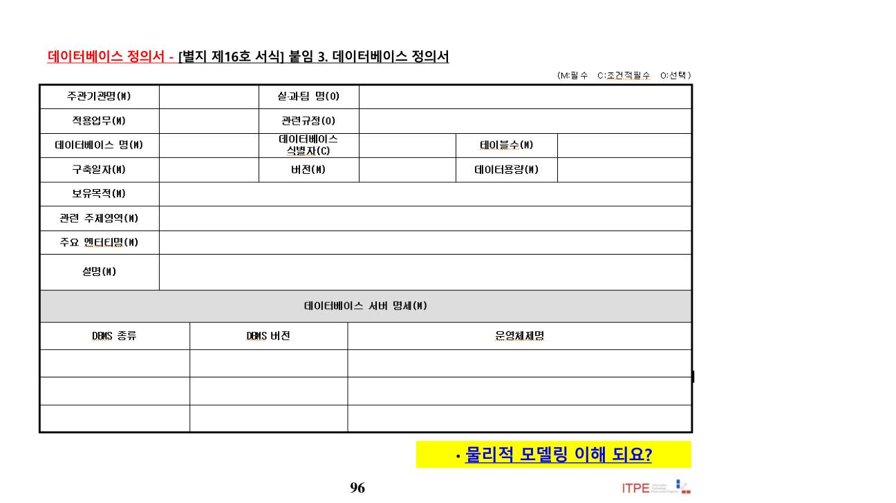
📄 원본 슬라이드 p.96 (추출 곤란 도표·ITO)
9. 공공기관의 데이터베이스 품질관리 지침
데이터베이스 품질 확보를 위한 목표 설정·진단·개선 활동을 규정한다. 코드정의서는 「행정기관 코드표준화 추진지침」의 행정표준코드를, 데이터사전은 행정표준용어사전의 등재 용어를 사용하여 작성한다(미제공 용어는 별도 작성).
💡 Tip
본 지침에는 감리 조항이 없다(구축·운영지침, 행정정보 DB 표준화지침과 대비). 코드/데이터사전의 준거(행정표준코드·행정표준용어사전)를 정확히 연결하는 것이 포인트.
10. 데이터베이스구축방법론 V4.0
데이터베이스를 구축하기 위한 준비/계획 → 구축 → 발행 → 검수 → 품질관리 공정과 단계별 산출물 템플릿, 데이터유형별 절차를 표준화하여 누구나 쉽게 수행하도록 한다(한국지능정보사회진흥원).
💡 Tip
방법론의 공정 순서와 자료유형 구분(고도화 수행 시 일관성 있는 코드 부여)이 출제 포인트. V3.0 대비 구축대상 자료유형이 확장되었다.
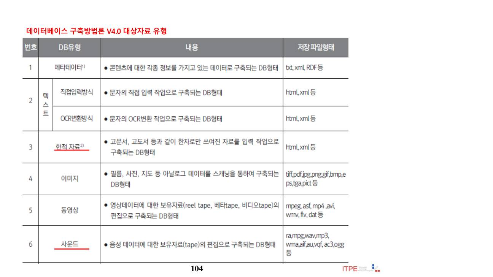
📄 원본 슬라이드 p.104 (추출 곤란 도표·ITO)
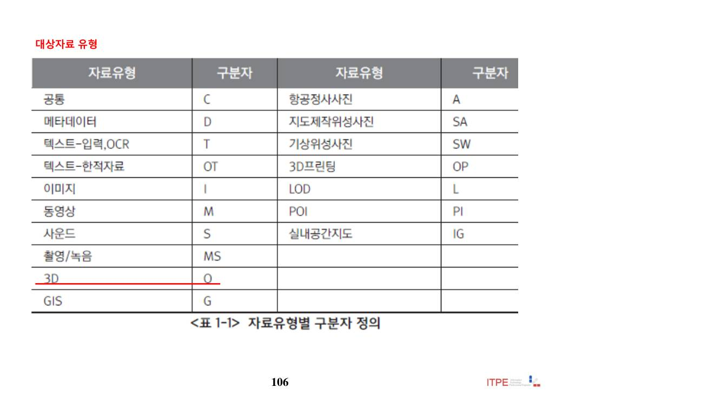
📄 원본 슬라이드 p.106 (추출 곤란 도표·ITO)
11. 공공데이터 관리지침
공공데이터법 제11조에 근거. "공공데이터"는 공공기관이 관리하는 광·전자적 자료이며, 지침은 제공정책의 효율적 시행을 위한 관리 원칙·기준을 제시한다. (기계 판독 포맷 단계는 M02 참조)
공공데이터 품질관리 4단계 ★★
단계
품질관리 활동(예)
계획
품질관리 체계·규정, 수행 조직 등 품질관리 정책 마련
구축
기관 데이터 표준 수립·적용 및 점검
운영
최신성·정확성·상호연계성 확보를 위한 상시 품질관리
활용
개방·활용 단계 품질 확보
💡 Tip
기계 판독 포맷에서 PDF·HWP는 오픈포맷이 아님(오답 단골). 품질관리 기본 원칙 = 최신성·정확성·상호연계성.
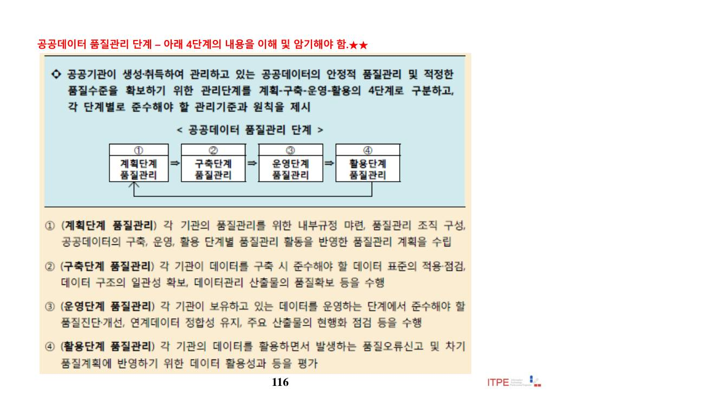
📄 원본 슬라이드 p.116 (추출 곤란 도표·ITO)
12. CBD SW개발 표준 산출물 관리 가이드
객체지향·CBD(Component Based Development) 개발의 분석·설계·구현·시험 단계 표준 산출물을 정의한다(한국지능정보사회진흥원, 2011.12). 반복적 개발에 따라 산출물이 지속 진화한다.
💡 Tip
산출물 코드 체계(예: 데이터베이스 설계서 = DV(물리데이터모델) 계열) 매핑이 출제된다. 분석(요구·개념)·설계(논리·물리)·구현·시험 산출물의 소속 단계를 구분한다.
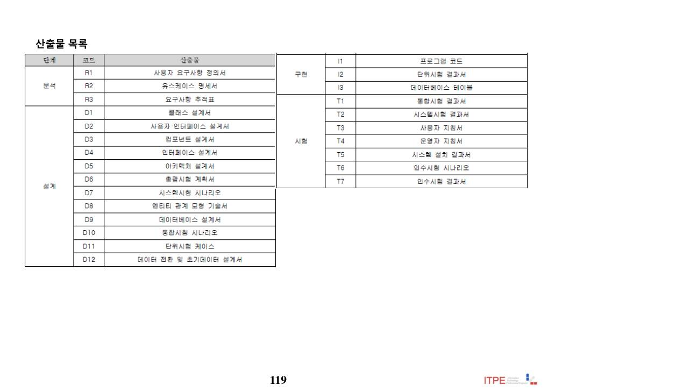
📄 원본 슬라이드 p.119 (추출 곤란 도표·ITO)
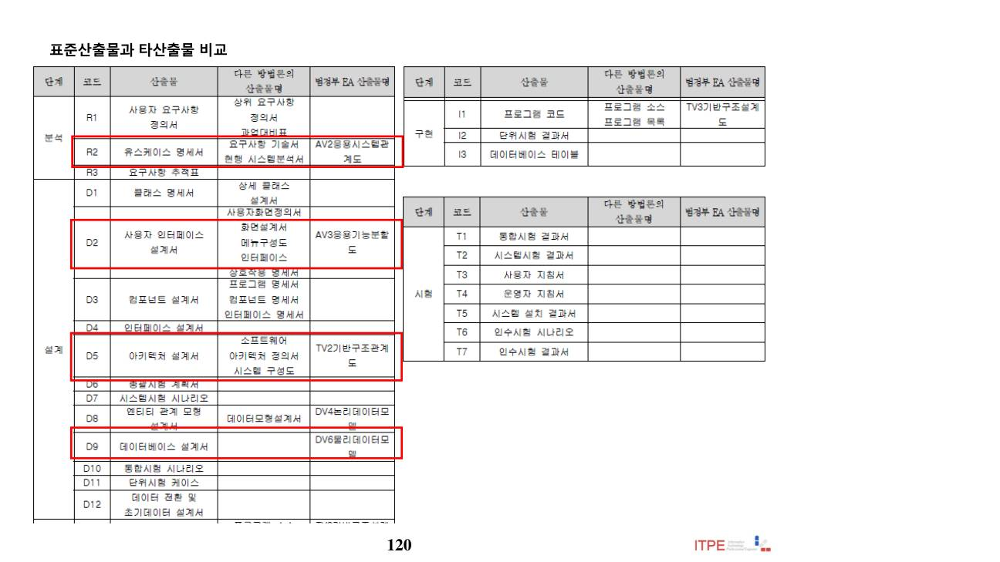
📄 원본 슬라이드 p.120 (추출 곤란 도표·ITO)
13. SW 분리발주 제도
정보화사업 발주 시 「분리발주 대상 소프트웨어」(과기정통부 고시)는 특별한 사유가 없는 한 개별적으로 직접 계약(분리발주)한다.
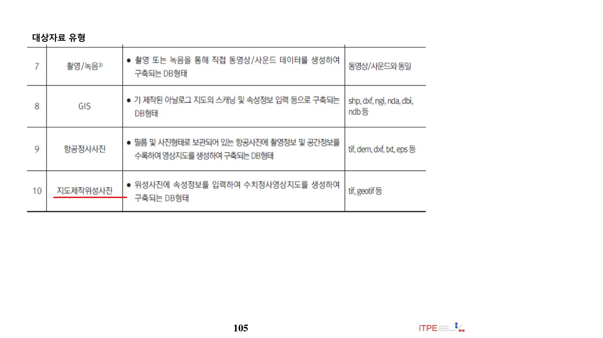
분리발주 대상 – 1차(사업규모)·2차(SW 가격·인증) 조건 (원본 슬라이드)
분리발주 대상 판단 ★★★
가격 요건: 대상 SW 가격 5천만원 이상 (동일 SW 다수 카피는 합산 판단)
GS인증·CC(정보보호시스템)인증 등 인증 SW는 분리발주 대상
인증 없는 일반 패키지 SW는 분리발주 대상이 아님
종합쇼핑몰 등록 제품·현저한 비용 상승 등은 제외 사유서를 제안요청서에 명시하고 제외 가능
Q. 분리발주 대상 SW 기준이 잘못 적용된 사례는?
정답 · "동일 SW(GS인증) 8카피를 분리발주하지 않음" — 20억 사업(1차 충족)에서 개당 800만원×8 = 6,400만원(5천만원 이상)이고 GS인증이므로 분리발주 대상이다. 반면 인증 없는 일반 패키지 SW는 분리발주 대상이 아니므로 분리발주하지 않아도 무방.
14. 용역계약일반조건
계약당사자가 이행할 계약조건을 정한다. (지체상금 산정은 M02 참조)
계약문서의 구성 ★★
계약문서 = 계약서 · 유의서 · 용역계약일반조건 · 용역계약특수조건 · 과업내용서 · 산출내역서. 필요 시 용역계약특수조건을 정할 수 있다.
💡 Tip · 함정
"용역계약특수조건은 국가계약 법령에 의한 계약당사자의 이익을 제한할 수 없다"가 정답. "제한할 수 있다"는 오답이다.
Q. 용역계약일반조건에 대한 설명으로 틀린 것은?
계약문서에는 유의서·용역계약일반조건·산출내역서가 포함된다.
필요한 경우 용역계약특수조건을 정하여 계약할 수 있다.
용역계약특수조건은 국가계약 법령에 의한 계약당사자의 이익을 제한할 수 있다.
정답 ③ — 특수조건은 계약상대자의 이익을 제한할 수 없다.
15. COBIT
COBIT(Control OBjectives for Information and related Technology)은 국내외에서 가장 널리 알려진 IT 거버넌스 프레임워크로, 현재 수준 진단을 통해 IT 통제 문제를 해결한다. IT와 비즈니스의 Alignment(정렬)가 목적이다.
COBIT Cube · 절차 ★★
COBIT Cube 3개 면
프로세스 절차(도메인)
① 비즈니스 요구사항 ② IT 프로세스 ③ IT 자원
계획 및 조직(PO) → 도입 및 구축(AI) → 운영 및 지원(DS) → 모니터링(ME)
💡 Tip · 함정
COBIT Cube의 3면은 비즈니스 요구사항·IT 프로세스·IT 자원. "IT 일반통제는 비즈니스 프로세스에 내재되어 현업 부서가 수행"과 같은 서술은 IT 응용통제/일반통제 개념을 뒤바꾼 오답이다.
Q. COBIT에 대한 설명으로 거리가 먼 것은?
COBIT 큐브의 3개 면은 비즈니스 요구사항, IT 프로세스, IT 자원이다.
프로세스 절차는 계획·조직 → 도입·구축 → 운영·지원 → 모니터링이다.
COBIT 5는 5원칙·7 인에이블러로 구성된다.
IT 일반통제는 비즈니스 프로세스에 내재되어 주로 현업 부서가 수행한다.
정답 ④ — IT 일반통제는 IT 부서 전반의 통제이며, 현업 부서가 프로세스에 내재하여 수행하는 것은 응용통제에 가깝다.
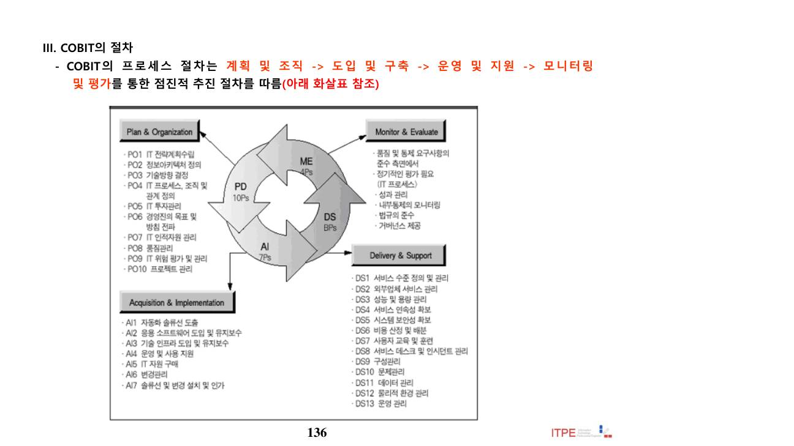
📄 원본 슬라이드 p.136 (추출 곤란 도표·ITO)
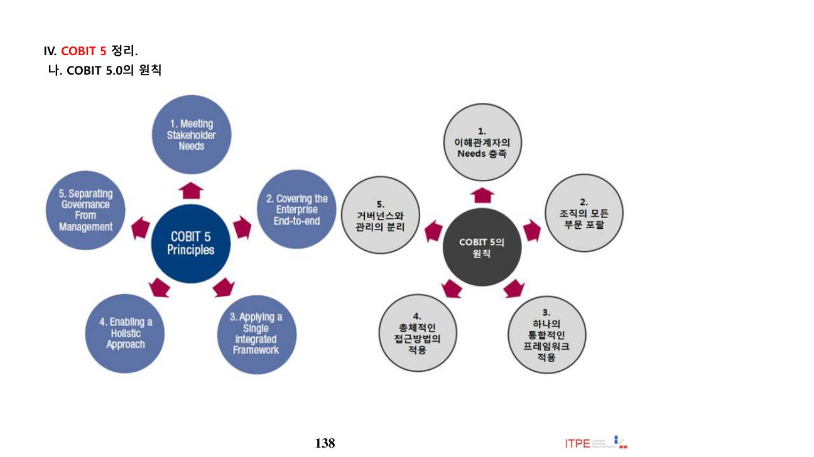
📄 원본 슬라이드 p.138 (추출 곤란 도표·ITO)
📚 전체 기출·예상문제 (23문항) — 원문 수록
본 강좌 원본 PDF에 수록된 기출·예상문제를 빠짐없이 원문 그대로 정리했습니다. 정답·해설은 강의 원문 기준입니다.
Q1. 1. 다음 중 「정보시스템 구축·운영 지침(행정안정부 고시 제2012-12호)」에 따른 예산 및 사업대가 산정에 대해 틀린 것은? (원본 p.23)
조달품목인 경우 조달단가
조달품목이 아닌 경우 최근 도입가격, 또는 유사한 거래 실례가격
4개 이상의 공급업체로부터 직접 받은 견적가격을 기준으로 한 최저가격
조달품목이 아닌 경우 최근 도입가격 위 경우는 나머지를 제외한 경우, 3개 이상의 공급업체로부터 직접 받은 견적가격을 기준으로 한 최저가격으로 사업대가 산정을 한다.
4개 이상의 공급업체로부터 직접 받은 견적가격을 기준으로 한 최저가격
정답 ③ 4개 이상의 공급업체로부터 직접 받은 견적가격을 기준으로 한 최저가격
Q2. “공공데이터의 제공 및 이용 활성화에 관한 법률”에 근거하여 고시된 “공공기관의 데이터베이스 표준화지침”에 따른 데이터베이스 표준화 활동과 거리가 먼 것은? (원본 p.36)
정보시스템의 구축·운영시 공공DB 표준화를 위하여 코드정의서, 표준용어정의서, 도메인정의서를 작성하여야한다.
다른 공공기관으로부터 제공받아 사용하는 연계데이터는 표준적용 여부와 범위를 자체적으로 선별 적용할수 있다.
패키지나 솔루션 형태의 정보시스템 도입 및 운영 등으로 데이터베이스 산출물 작업이 불가능하더라도 엔티티정의서, 논리데이터 모델 다이어그램은 작성 되어야 한다.
데이터 표준 수립, 데이터표준 적용 및 현행화 등의 점검표를 활용하여 소관 공공DB의 표준화 수준을 년1회 이상 정기적으로 점검하여야 한다.
정답 ③ [참고] 소관: 맡아 관리하는 바.
Q3. “소프트웨어사업 대가산정 가이드”의 소프트웨어 재개발비 산정대상 중 가장 거리가 먼 것은? (원본 p.45)
신규기능 추가
기존기능 수정 후 재사용
기존기능 삭제
기존기능 수정 없이 재사용
정답 ③ 기존기능 삭제
Q4. “SW사업 대가산정 가이드”에서 소프트웨어 재개발비의 변경률 산정에 관한 설명으로 가장 거리가 먼 것은? (원본 p.51)
설계 변경률이 높다면 소프트웨어의 재개발노력이 증가함을 의미한다.
트랜잭션 설계 변경률은 사용자인터페이스, 업무처리로직, 데이터처리로직의 변경 정도에 따라 산정된다.
코드 변경률은 설계 변경률보다 작은 값을 갖는다.
설계 변경률과 코드 변경률이 0%인 경우에도 통합및 시험 변경률이 50%인 경우가 있을 수 있다
정답 ③ 코드 변경률은 설계 변경률보다 작은 값을 갖는다.
Q5. “SW사업 대가산정 가이드”의 내용으로 가장 거리가 먼 것은? (원본 p.62)
정보전략계획수립 난이도에는 사용자 참여도, 현장 방문 요구, 사용양식의 수 등을 3단계로 나누 어 평가한다.
소프트웨어 개발사업에서 기능점수 방식을 적용함에 있어 프로젝트의 복잡도에 분산처리, 성능, 신뢰성, 다중 사이트 등을 고려하여 품질 및 특성 보정계수를 반영한다.
유지관리 대상 시스템의 난이도는 분산처리 여부, 타 시스템 연계 등에 대해서 3단계로 평가한다.
데이터베이스 구축 사업의 현대간행물 일반공정 대가산정에서 스캔 작업난이도와 이미지 보정난이도, 메타데이터 제작 난이도는 3단계로 평가한다.
정답 ④ 데이터베이스 구축 사업의 현대간행물 일반공정 대가산정에서 스캔 작업난이도와 이미지 보정난이도, 메타데이터 제작 난이도는 3단계로 평가한다.
Q6. "SW사업 대가산정 가이드"에 제시된 대가산정 방법 중 투입공수방식과 가장 거리가 먼 것은? (원본 p.65)
정보화전략계획(ISP) 수립비
정보보안 컨설팅비
소프트웨어 운영비
소프트웨어 재개발비
정답 ④ 소프트웨어 재개발비
Q7. 소프트웨어 사업대가 산정 가이드에 대한 설명으로 가장 거리가 먼 것은? (원본 p.66)
컨설팅 지수 방식에 의한 정보전략계획(ISP) 수립비 산정시 컨설팅 지수는 정보전략 계획 수립의 난이도를 반영한다.
기능점수 방식에 의한 소프트웨어 개발비 산정은 품질 및 특성을 고려하여 개발원가를 보정한다.
요율제 방식에 의한 소프트웨어 유지보수비 산정에서 유지보수 대상 소프트웨어 개발비는 소프트웨어 개발 시점의 규모와 단가로 산정한다.
소프트웨어 재개발비 산정시에 설계 변경율, 코드 변경율, 통합 및 시험 변경율을 반영하여 총 변경율을 계산한다
정답 ③ 요율제 방식에 의한 소프트웨어 유지보수비 산정에서 유지보수 대상 소프트웨어 개발비는 소프트웨어 개발 시점의 규모와 단가로 산정한다.
Q8. 1. 소프트웨어산업진흥법에서는 SW 품질성능 평가시험(BMT) 결과를 제품구매에 반영하도록 하고있는데 이와 관련하여 맞게 설명하고 있는 것은? (원본 p.72)
소프트웨어 제품구매 금액이 5천만원이상인 분리발주대상 SW는 모두 BMT 대상이 된다.
분리발주SW를 구매하려는경우 SW 사업자가 직접 실시하거나 또는 지정시험기관에 의뢰하여 BMT를 실시할수있다.
구매대상분리발주SW에 대해 지정시험기관에서 이미 BMT를 실시한 결과가 있는 경우에도 각 사업마다 실시하여야한다.
국가기관이 지정시험기관에 의뢰하여 BMT를 실시하는 경우 여기에 소요되는 비용은 SW 공급업체에 일부 부담 시킬 수 있다.
정답 ④ 국가기관이 지정시험기관에 의뢰하여 BMT를 실시하는 경우 여기에 소요되는 비용은 SW 공급업 체에 일부 부담 시킬 수 있다. (O)
Q9. 1. “소프트웨어사업 관리감독에 관한 일반기준” 에서 제시된 사업규모(FP)에 따른 1인 생산성 (FP/MM)과 가장 거리가 먼 것은? (원본 p.79)
1,000 FP 이하, 19 FP/MM
1,000 ~ 1,999 FP, 22 FP/MM
2,000 ~ 2,999 FP, 24 FP/MM
3,000 FP 이상, 26 FP/MM
정답 ④ 3,000 FP 이상, 26 FP/MM
Q10. 1. “소프트웨어 사업 관리감독에 대한 일반기준 에서는 발주자가 발주에 필요한 개념을 정의하고 , 요구사항을 상세화하여 발주계획을 수립하도록 있다 . 이 기준에 기준에 제시된 요구사항 유형 과 설명으로 가장 거리 가 먼 것은 ? (원본 p.83)
성능 요구사항 – 목표 시스템의 시스템의 처리속도 및 시간 , 처리량 , 동적 ·정적용량 정적용량 , 가용성 등에 대한 요구사항 요구사항
인터페이스 요구사항 – 목표시스템과 외부를 연결하는 시스템 인터페이스와 사용자 인터페이스에 대한 요구 사항
운영 요구사항– 목표사업수행을 위해 필요한 하드웨어 , 소프트웨어 , 네트워크 등의 도입 장비 내역 시스템 장비 구성에 대한 요구사항
테스트 요구사항 – 도입되는 장비의 성능 (BMT) 또는 구축된 시스템이 목표 대비 제대로 운영되는가를 테스트하고 점검하기 위한 요구사항
정답 ③ 운영 요구사항– 목표사업수행을 위해 필요한 하드웨어 , 소프트웨어 , 네트워크 등의 도입 장비 내역 시스템 장비 구성에 대한 요구사항
Q11. "제안요청서 요구사항 작성 가이드"에서 제시한 요구사항 유형별 설명으로 가장 거리가 먼 것은? (원본 p.87)
운영 요구사항 - 개발 시스템을 다른 플랫폼이나 운영체제에 설치 또는 운용할 수 있도록 하기 위한 속성 기술
인터페이스 요구사항 - 개발 시스템과 연동할 외부 시스템과의 인터페이스, 사용자 인터페이스 기술
품질 요구사항 - 개발 시스템이 만족시켜야 할 5가지 품질 특성(신뢰성, 사용성, 유지보수성, 이식성, 보안성) 에 대해 품질목표를 달성하기 위한 요건 기술
데이터 요구사항 - 개발 시스템에 사용될 초기 데이터의 구축 및 데이터 관리 요구사항 기술
정답 ① 운영 요구사항 - 개발 시스템을 다른 플랫폼이나 운영체제에 설치 또는 운용할 수 있도록 하기 위한 속성 기술
Q12. 1. “행정정보 데이터베이스 표준화지침”에서 제시하고 있는 장애요인 중 복구목표시간이 가장 긴 것은? (원본 p.92)
운영 실수
해커 침입
컴퓨터 바이러스의 피해
저장장치 손상
정답 ④ 저장장치 손상
Q13. “행정정보 데이터베이스 표준화지침”에서 제시하고 있는 장애요인 중 복구목표시간이 가장 짧은 것은? (원본 p.93)
운영 실수
해커 침입
데이터 엑세스 결함
저장장치 손상 에델바 - 데이터 엑세스 결함은 5분으로 가장 짧다.
데이터 엑세스 결함
정답 ③ 데이터 엑세스 결함
Q14. "행정정보 데이터베이스 표준화지침"에 따라 행정DB 설계시 수행해야 할 작업으로 가장 거리가 먼 것은? (원본 p.95)
논리적 데이터요소 정의서의 작성
데이터도메인 정의서의 작성
데이터베이스 정의서의 작성
코드정의서의 작성
정답 ③ 데이터베이스 정의서의 작성
Q15. 다음 지침 중 감리를 통한 진단 또는 점검이 내부 조항으로 명시되어 있는 것을 모두 고르시오. (2개 선택) (원본 p.98)
정보시스템 구축ㆍ운영지침
전자정부서비스 호환성 준수지침
공공기관의 데이터베이스 품질관리지침
행정정보 데이터베이스 표준화지침
정답 ① 정보시스템 구축ㆍ운영지침, ④ 행정정보 데이터베이스 표준화지침
Q16. 「공공기관의 데이터베이스 품질관리 지침(행정안전부 고시 제2011-25호)」에 행정기관은 데이터베이스 표준화를 위하여 관리할 대상을 규정하고 있다. 다음 보기 중 이에 해당하는 것을 모두 고른 것은? 가. 테이블 생성규칙 나. 컬럼 명명규칙 다. 코드정의서 라. 데이터사전 (원본 p.102)
가, 나, 다
나
다
다, 라
정답 ④ 다, 라
Q17. 1. 데이터베이스구축방법론 V3.0(한국정보화진흥원)에서 구축대상으로 하고 있는 대상자료로 묶인 것은? (원본 p.107)
가, 다, 라
나, 다
가, 나, 다
가, 나, 다, 라
정답 ④ 가, 나, 다, 라
Q18. “공공데이터 관리지침”에서 제시하고 있는 텍스트 유형 공공데이터에 대한 ‘기계 판독이 가능한 데이터 형태(format)’의 권고사항과 가장 거리가 먼 것은? (원본 p.113)
HWP 파일
XML 파일
PDF 파일
RDF 파일
정답 ③ PDF 파일
Q19. “공공데이터 관리지침”에서 제시하는 3단계 이상 적용되는 오픈 포맷의 유형이 아닌 것은? (원본 p.114)
JSON
XML
LOD
HWP
HWP 는 2단계 포맷으로 오픈 포맷이 아니다.
정답 ④ HWP
Q20. 1. 한국정보화진흥원에서 공표한 “CBD SW 개발 표준 산출물 관리 가이드(2011.12)”에 따라 작성된 표준 산출물은 EA 산출물 현행화에 활용될 수 있다. 표준산출물과 EA 산출물이 적절하게 연결된 것은? (원본 p.121)
유즈케이스명세서 – AV3 응용기능분할도
사용자 인터페이스 설계서 – AV2 응용시스템관계도
데이터베이스 설계서 – DV6 물리데이터모델
아키텍처 설계서 – TV3 기반구조설계도
정답 ③ 데이터베이스 설계서 – DV6 물리데이터모델
Q21. 다음 중 분리발주 대상 소프트웨어 기준이 잘못 적용된 사례는? (원본 p.128)
강남구는 20억 규모의 통합행정업무 시스템 구축사업을 수행하면서 개당 800만원의 동일 소프트웨어(GS인증) 8카피를 분리발주 하지 않았다.
국세청은 15억 규모의 국세관리시스템 사업을 수행하면서 정가 3천만원의 정보보호시스템인증(CC인증) 소프트웨어를 분리발주 하지 않았다.
서울시는 50억 규모의 도시관리 통합전산화 사업에서 2억 규모의 신제품 인증(NEP)을 받은 소프트웨어를 도입하려 하였으나, 분리발주 할 경우 현저한 비용 상승을 초래하여 분리발주 대상에서 제외하고 이를 입찰공고문에 명시하였다.
부산시는 8억 규모의 항만관리시스템 구축사업에서 3천만원 규모의 신기술 인증(NET) 소프트웨어를 분리발주 하였다.
도로공사는 21억 규모의 도로관제 통합 시스템을 구축하면서 4억 규모의 인증이 없는 일반 패키지 소프트웨어를 분리발주 하지 않았다.
정답 ① 강남구는 20억 규모의 통합행정업무 시스템 구축사업을 수행하면서 개당 800만원의 동일 소프트웨어(GS인증) 8카피를 분리발주 하지 않았다.
Q22. 다음 중 「용역계약일반조건(계약예규 2200.04-161-13, 2012.04.02)」에서 정한 계약문서에 대한 설명 중 거리가 먼 것은? (원본 p.133)